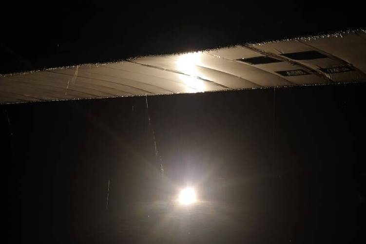
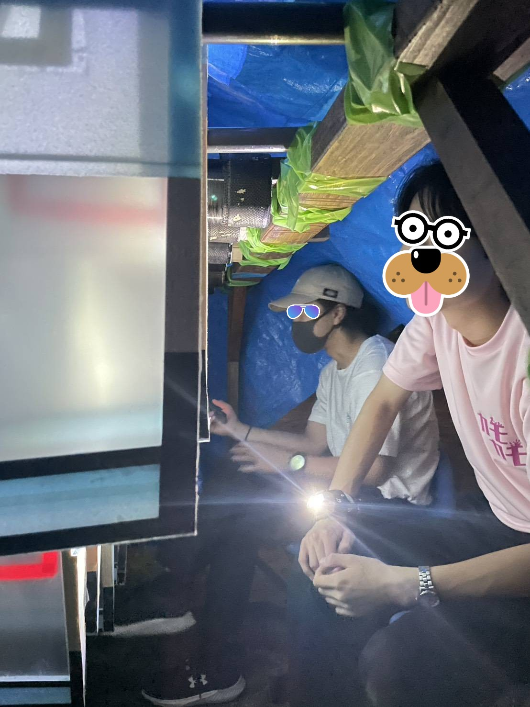
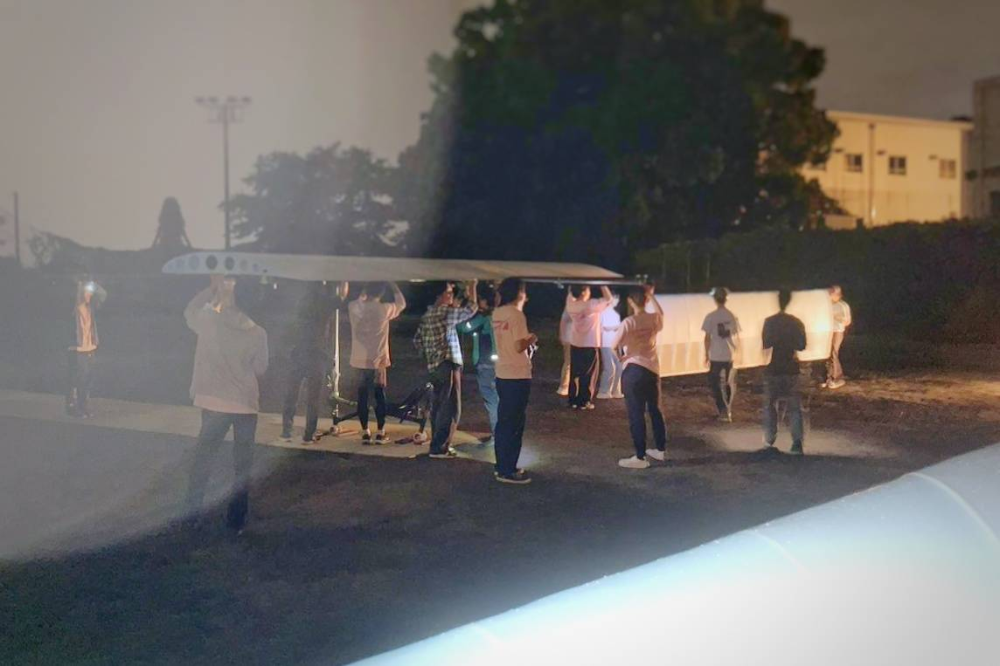

２６代 第２回GTFレポート
準備
２２時頃に機体を組み立てる準備を始めました。しかし、直後に急な雨に見舞われ作業の延期を余儀なくされました。その後深夜２時から機体の組み立てを開始しました。４回目の全組ということもあって歴代最速レベルで機体を完成させることができました！

組み立て中の写真
雨
こうして順調に機体が組みあがった直後、空から雨が降り始め、やがて土砂降りとなってしまいました。

翼からしたたる雨水

翼ラックと雨宿りをする人々
その後...
雨が止む気配はなく、翼には雨水が多く付着しフィルムのすき間から雨水が浸透していました。最終的に、これ以上の続行は不可能と判断しGTF中止の決断が下されました。

雨の中、機体を解体する様子
さいごに
今回のGTFは非常に残念な結果となってしまいました。今後は、次回の富士川TFに向け、壊れた翼の修理や機体の調整を全力で行っていきます！
ここまで読んでいただきありがとうございました！
横浜AEROSPACE 27代構造設計 山鹿